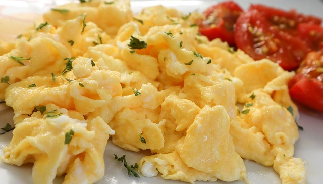

How To Scramble Eggs in 10 Languages?
Here is how you can scramble an egg in ten languages.

Image: Pixabay
English
Crack the egg into a bowl and beat it with a fork. Heat a pan over medium heat and add a small amount of butter or oil. Pour the beaten egg into the pan and stir constantly until the egg is fully cooked and no longer liquid.
Spanish
Rompe un huevo en un tazón y bátelo con un tenedor. Calienta una sartén a fuego medio y agrega una pequeña cantidad de mantequilla o aceite. Vierte el huevo batido en la sartén y revuelve constantemente hasta que el huevo esté completamente cocido y ya no sea líquido.
French
Cassez un œuf dans un bol et battez-le avec une fourchette. Faites chauffer une poêle à feu moyen et ajoutez une petite quantité de beurre ou d’huile. Versez l’œuf battu dans la poêle et mélangez constamment jusqu’à ce que l’œuf soit complètement cuit et ne soit plus liquide.
German
Schlage ein Ei in einer Schüssel auf und verquirle es mit einer Gabel. Erhitze eine kleine Menge Butter oder ein wenig Öl in einer Pfanne bei mittlerer Hitze und gieße das aufgeschlagene Ei in die Pfanne. Rühre solange bis das Ei stockt wird und nicht mehr flüssig ist.
Italian
Rompi un uovo in una ciotola e sbattilo con una forchetta. Scalda una padella a fuoco medio e aggiungi una piccola quantità di burro o olio. Versa l’uovo sbattuto nella padella e mescola costantemente finché l’uovo non è completamente cotto e non è più liquido.
Portuguese
Quebre o ovo em uma tigela e bata com um garfo. Aqueça uma panela em fogo médio e adicione uma pequena quantidade de manteiga ou óleo. Despeje o ovo batido na panela e mexa constantemente até que o ovo esteja totalmente cozido e não mais líquido.
Japanese
ボウルに卵を割り入れ、箸で溶きほぐす。フライパンを中火に熱して、少量バター又はオイルを入れる。卵を入れ、完全に焼けるまで混ぜ続ける。
Swedish
Knäck ägget i en skål och vispa det med en gaffel. Hetta upp en panna på medelvärme och tillsätt en liten mängd smör eller olja. Häll det uppvispade ägget i pannan och rör hela tiden tills ägget är helt genomkokt och inte längre flytande.
Polish
Rozbij jajko do miski i roztrzep je za pomocą widelca. Rozgrzej patelnię na średnim ogniu i dodaj niewielką ilość masła lub oleju. Wlej roztrzepane jajko na patelnię i mieszaj ciągle aż jajko całkowicie się zetnie i nie będzie już płynne.
Hindi
एक बोल में एक अंडा तोड़कर फोर्क से मिलाएँ। मध्यम ऊर्जा पर पैन गरम करें और थोड़ा मक्खन या तेल डालें। मिलाये हुवे अंडे को पैन में डालें और अंडा पूरी तरह से पकने तक हिलाएँ।
Get Scrambling
This little guide was a demonstration of how you can use shiny.i18n with Quarto to create a document in multiple languages. And what’s more, you now know how to scramble eggs! You can view the full tutorial here